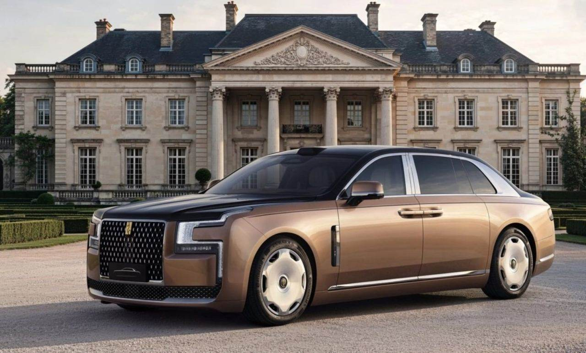
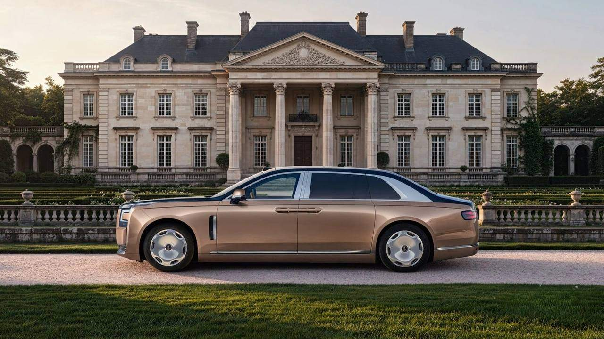
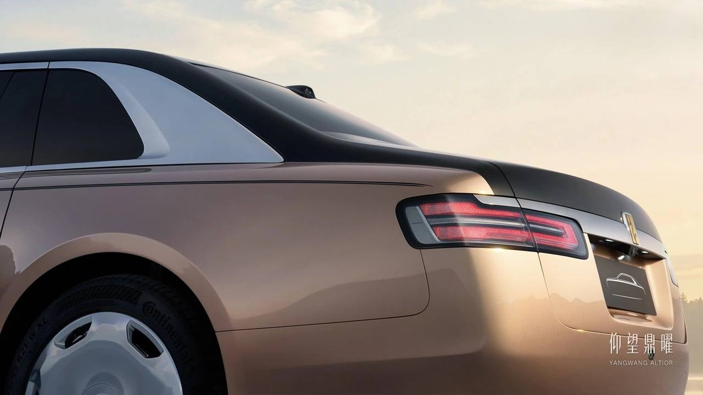

Yangwang（仰望） · 首發 · 中國2026-11-07
仰望 Altior／鼎曜阿布達比首發：對開式車門與 137 顆寶石格柵
BYD Yangwang Altior debuts with Rolls-Royce-style coach doors
BYD 高端品牌仰望於 11 月 7 日在阿布達比 Emirates Palace 舉行品牌海外首場活動，全球首發旗艦轎車 Altior（中文名鼎曜）。車長 5,600mm、軸距 3,500mm，後對開式車門可開至 90 度，定位對標勞斯萊斯 Ghost、邁巴赫 S-Class 與尊界 S800。中國預售基準價 208 萬元人民幣，對應山河鼎運限量版。
設計解析 Design Notes
- 比例直立三廂、短前懸與長後懸，C 柱另開三角形窗，把五米六的尺度做成傳統座車剪影。
- 車頭家族式水晶 C 形頭燈被稱為鼎形切割水晶燈，高大格柵填入 137 顆寶石切面元件，廠徽為 24K 金。
- 車門前門開啟約 80 度，後對開式車門近 90 度；門框內藏雨傘槽，肩線有 4.8 米手繪雙條 coachline。
- 輪圈鏡面拋光一體式碟輪採浮動中心蓋，配 275/45 R21，相對車身尺度刻意偏小。
- 品牌方向銷售總經理胡曉青說前臉方案超過 100 個、開發三年；仰望把旗艦轎車放到阿布達比做海外首秀。